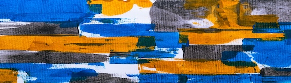
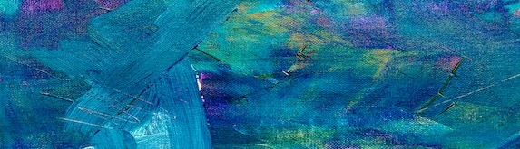
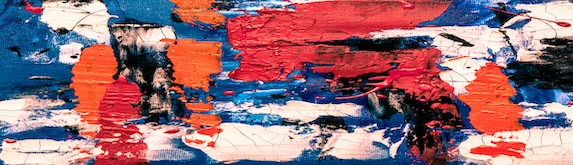

“Matin printanier”, Léa pagallie

“Tempête Immobile”, Maelys Riven

“Oranger”, Guillaume Da pastora
Nouveautés

Découvrez la nouvelle collection de Thomas Guiho, artiste reconnu pour ses compositions vibrantes et contrastées. Entre énergie brute et délicatesse chromatique, ses œuvres incarnent une vision contemporaine de l’abstraction.


